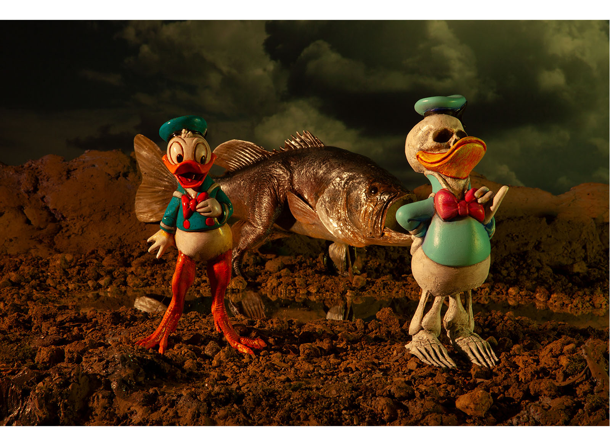

Exhibitions
Crucial Fiction, Opera Gallery, New York, New York, US, November 1–29, 2012.
Is It Still Life?, Brassworks Gallery, Portland, Oregon, US, March 8–April 5, 2025.
Literature
Ron English, Death and the Eternal Forever (Korero Press, 2014), p. 25. ISBN 978-0957664920.
Ron English, Status Factory: The Art of Ron English (San Francisco: Last Gasp, 2014), p. 101. ISBN 978-0867197891.
Ron English, Fauxlosophy: The Art of Ron English (San Francisco: Last Gasp, 2016), p. 138. ISBN 978-0867196566.
Ron English, Original Grin: The Art of Ron English (Paris: Cernunnos, 2019), p. 340. ISBN 978-2374950938.
Notes
This work was reproduced on the show card for Is It Still Life?.
Ancillary Documentation

Selected Online Circulation
Selected examples of the work’s online circulation, reproduction, or discussion. This list is not exhaustive; it is intended to document representative appearances of the image beyond formal exhibition and publication records.